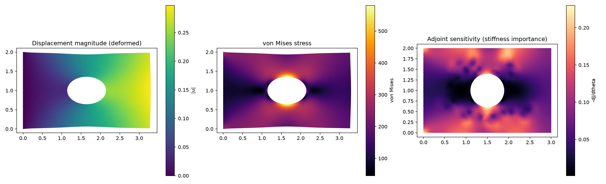
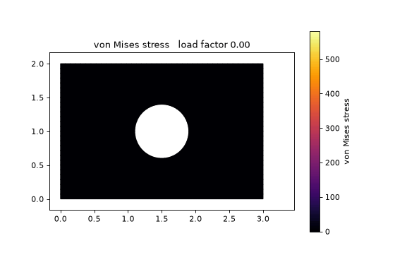
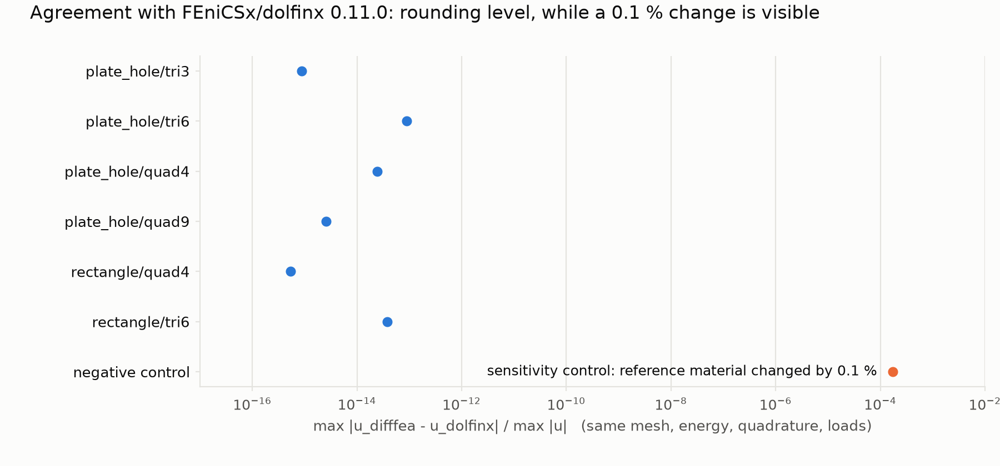
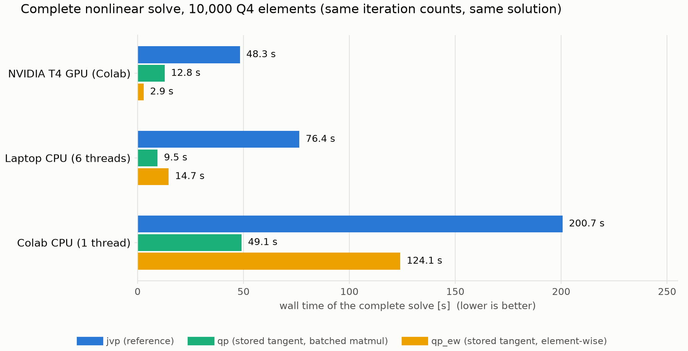

Matrix-Free · Differentiable · Newton–Krylov
Differentiable FEA —
beyond the stiffness matrix.
Matrix-free differentiable finite elements: weak-form residuals and Jacobian–vector products are evaluated through automatic differentiation, enabling Newton–Krylov solution without explicitly assembling the global stiffness matrix. A solver for large-strain hyperelasticity in purely functional PyTorch.
At a glance
- Problem
- Solving nonlinear finite-element problems without forming the global tangent matrix, and with exact derivatives.
- Method
- Differentiable matrix-free Newton–Krylov FEA: automatic-differentiation Jacobian–vector products inside preconditioned conjugate gradients, in an inexact Newton iteration.
- Physics & math
- Weak-form mechanics. The residual and the tangent are the first and second derivatives of one strain-energy density; design gradients follow from the implicit function theorem and one adjoint solve.
- Result
- Agreement with FEniCSx/dolfinx below 10−13 (≤ 9×10−14); an 11.6× faster GPU tangent product after profiling; 10,000 Q4 elements solved in 2.9 s on a T4 GPU.
The problem
Traditional nonlinear finite-element analysis generally solves a sequence of linearized systems, one per Newton iteration. Each involves a tangent (Jacobian, or stiffness) matrix \( \boldsymbol{K}=\partial\boldsymbol{R}/\partial\boldsymbol{u} \) that is assembled from the element contributions, stored, and then factorized or iterated on. For large problems that matrix can dominate memory, more so for high-order elements and in 3D.
The key point is not that stiffness matrices are obsolete. It is narrower: the global stiffness (Jacobian) matrix does not need to be explicitly assembled or stored. Everything a Newton–Krylov method needs from it is the action of the matrix on a vector.
Formulation
The solver handles displacement-based, 2D plane-strain finite elasticity with Q4, Q8, Q9, Tri3 and Tri6 elements, and hyperelastic laws including neo-Hookean, Mooney–Rivlin and Saint Venant–Kirchhoff. The unknown nodal displacements \( \boldsymbol{u} \) minimize the total potential energy, which is the same as solving the residual equation
where \( \boldsymbol{p} \) collects material and design parameters. The residual is itself obtained by differentiating the strain energy, so adding a new constitutive model means writing only its energy density.
Matrix-free Newton–Krylov
Each Newton step requires the solution of \( \boldsymbol{K}\,\delta\boldsymbol{u}=-\boldsymbol{R} \). The pipeline below replaces the assembled \( \boldsymbol{K} \) by a routine that returns \( \boldsymbol{K}\boldsymbol{v} \) for any vector \( \boldsymbol{v} \).
One Newton step, matrix-free
- Weak form∫ P(F) : ∇v dV − ℓ(v) = 0Equilibrium as a stationary point of the strain energy.
- Residual R(u)R(u) = fint(u) − fextEvaluated element by element at quadrature points.
- Automatic differentiationd/dε R(u + εv) at ε = 0Forward-mode derivative through the constitutive law.
- J(u)v no global matrixJ(u) vThe action of the tangent on a vector, which is all a Krylov method needs. Computed by forward-mode AD, or from tangent moduli stored at the quadrature points.
- Krylov solverJ δu = −R, solved inexactlyPreconditioned conjugate gradients; the tolerance is loose far from the solution and tightens near it (Eisenstat–Walker forcing term).
- Newton updateu ← u + α δuArmijo line search, inside an adaptive load-continuation loop that halves the load step if Newton fails.
↺ repeat from the residual until ‖R(u)‖ is below tolerance
What automatic differentiation provides
The residual is a differentiable function of the nodal displacements. Forward-mode automatic differentiation returns the directional derivative
for a given \( \boldsymbol{v} \), at a cost of a small multiple of one residual evaluation, and without ever writing \( \boldsymbol{K} \) down. This is a Jacobian–vector product. Four variants of the operator trade memory for speed, from plain forward-mode AD to tangent moduli stored at the quadrature points (computed once per Newton step by the same machinery) and applied per product. The fastest, an element-wise variant, replaces batched small matrix products by element-wise contractions.
Why Krylov methods only need products
A Krylov method builds its iterates from the vectors \( \boldsymbol{r},\ \boldsymbol{K}\boldsymbol{r},\ \boldsymbol{K}^2\boldsymbol{r},\dots \) and never asks for individual entries of \( \boldsymbol{K} \). Preconditioned conjugate gradients, used here for the symmetric tangent of hyperelasticity (positive definite near stable equilibria), therefore needs only the routine that returns \( \boldsymbol{K}\boldsymbol{v} \). The Jacobi and block-Jacobi preconditioners are built from element-level quantities, again without the global matrix. The Newton iteration is inexact: the linear solve is deliberately loose far from the solution, because accurate solves there are wasted work.
Memory and differentiability
With no global matrix, memory is dominated by vectors of the size of the unknowns, plus small per-quadrature-point blocks in the stored-tangent variants. That is why matrix-free evaluation can reduce memory requirements, especially where assembled matrices grow quickly: high-order elements and 3D. In this code that has not been measured yet; GPU memory per variant is still on the roadmap.
It also makes nonlinear simulation differentiable end to end. The solve is a composition of differentiable operations followed by one implicit solve, so derivatives of a design objective can be taken exactly, as described next.
Exact sensitivities
For a design objective \( J(\boldsymbol{u},\boldsymbol{p}) \), differentiating through all Newton iterations would be costly and fragile. Instead the gradient follows from the implicit function theorem, with one extra linear solve at the converged state:
The adjoint solve reuses the same matrix-free operator, and the gradients are checked against finite differences.
Example: plate with a hole
A plate with a hole in tension (Q9 elements, neo-Hookean, about 10% stretch). The solver returns the deformation, the von Mises stress, which peaks at the hole, and, from the adjoint, the sensitivity of the compliance to the stiffness of every element.

The same problem under load continuation: the load factor goes from 0 to 1 in five increments, and each one is solved by Newton–Krylov iteration (40 Newton steps in total). The animation interpolates between the converged states.

Validation
- Solutions agree with FEniCSx/dolfinx to rounding level (relative difference ≤ \( 9\times10^{-14} \), below \( 10^{-13} \)) on identical discretizations.
- Cantilever deflections agree with Timoshenko beam theory to about 1%.
- The stress concentration for a plate with a hole matches Heywood's Kirsch-based formula within 3%.
- A suite of 194 automated tests passes. Geometries such as notched plates and L-brackets are meshed with Gmsh.
On identical meshes, energies, quadrature and loads, displacements differ from FEniCSx/dolfinx by rounding error only, for triangles and quadrilaterals of both orders. A deliberate 0.1% change of the reference material shows up at \( 10^{-4} \), so the comparison is sensitive.

Performance
For a 10,000-element Q4 problem in double precision, a complete nonlinear solve takes 2.9 s on a T4 GPU with the element-wise variant. Profiling found that the first stored-tangent GPU version spent most of its time in batched matrix products on tiny matrices; rewriting the same contractions as element-wise operations made the tangent product 11.6× faster (1.28 ms against 14.9 ms at 40,000 elements; 5.0 ms against 59 ms at 160,000). That figure is for the tangent product, not for the whole solve.
| Device | Forward-mode AD (reference) | Stored tangent, batched | Stored tangent, element-wise |
|---|---|---|---|
| NVIDIA T4 GPU | 48.3 s | 12.8 s | 2.90 s |
| Laptop CPU (6 threads) | 76.4 s | 9.45 s | 14.7 s |
| Colab CPU (1 thread) | 200.7 s | 49.1 s | 124.1 s |
On a CPU the batched variant is faster, so the default depends on the device. On a CPU in 2D an assembled sparse matrix is still faster per product than any matrix-free variant (0.61 ms against 6.4 ms for the stored-tangent variant, 40,000 Q4 elements, laptop).

What this does and does not claim
- Does: the global matrix is never assembled or stored; Jacobian–vector products come from automatic differentiation; derivatives are exact; the results are validated against FEniCSx/dolfinx and analytic solutions.
- Does not: claim that stiffness matrices are obsolete, that matrix-free evaluation is faster for every problem, or that linear algebra disappears. A linear system is still solved at every Newton step.
- Not yet measured: 3D, high-order elements at scale, GPU memory per variant, float32, and multi-GPU execution.
The code is an early release (v0.1) for 2D plane strain on a single process. Completed: the solver, the adjoint sensitivities, and the validation. Planned: 3D hexahedral elements, scalable preconditioning (p-multigrid), distributed and multi-GPU execution, plasticity and contact. Volumetric locking appears as the Poisson ratio approaches 0.5.
Code
The package, tests, benchmarks, a Streamlit app and a Colab notebook are open source at github.com/miladshirani/Differentiable-FEA ↗. Related work: differentiable meshless mechanics.